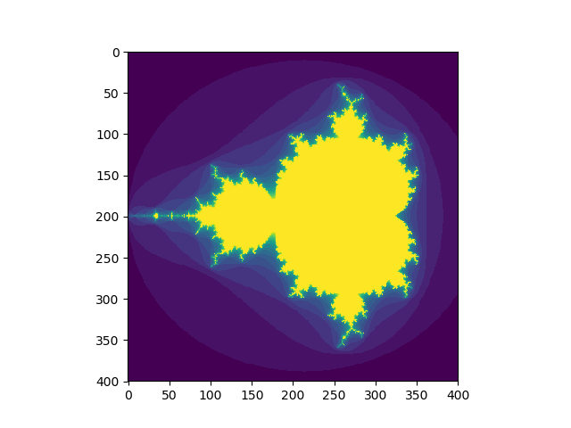

NumPy – operace s polemi
by Jiří Znamenáček
Úvod
Operace s (vícerozměrnými) poli (tedy objekty typu ndarray) v NumPy jsou velmi důležité a také velmi rozmanité. Ruku v ruce s výřezy máme k dispozici velmi početnou armádu metod, které slouží k úpravě již existujících polí/matic a výběru nějakých jejich podmnožin.
V dalším si ukážeme pár základních příkladů na práci s numpyovskými polemi, ale jako vždy – knihovna Numpy je příliš rozsáhlá, abychom zde probrali všechno, a navíc v žádném případě nemůžu tvrdit, že bych ji vůbec nějak ovládal…
PS: V příkladech budu používat modul numpy naimportovaný podle zvyku jako:
import numpy as np
I. Binární (a unární) operace mezi poli
Jak už jsem zmiňoval v přehledové přednášce, unární a binární operace nad poli jsou v základu prováděny „po složkách“:
# základní pole
>>> a = np.array([[1, 2, 3], [4, 5, 6]])
# mínus pole
>>> -a
array([[-1, -2, -3],
[-4, -5, -6]])
# násobení pole skalárem
>>> 3 * a
array([[ 3, 6, 9],
[12, 15, 18]])
# sčítání polí
>>> a + a
array([[ 2, 4, 6],
[ 8, 10, 12]])
Zatímco u násobení pole skalárem a sčítání či odčítání polí (stejného tvaru) to nikoho nepřekvapí, takové násobení už nemá s maticovým vůbec nic společného a musíte na to při práci pamatovat:
>>> a * a
array([[ 1, 4, 9],
[16, 25, 36]])
Další příklady se skaláry
Se skaláry se dá nepřekvapivě „vyřádit“ mnohem více:
>>> a = np.arange(6).reshape(2, 3)
>>> a
array([[0, 1, 2],
[3, 4, 5]])
>>> a + 1
array([[1, 2, 3],
[4, 5, 6]])
>>> 2**a
array([[ 1, 2, 4],
[ 8, 16, 32]])
>>> 2**(a + 1)
array([[ 2, 4, 8],
[16, 32, 64]])
>>> 2**a - 1
array([[ 0, 1, 3],
[ 7, 15, 31]])
Složitější typy
Numpy ale dokáže i zkonvertovat (a případně též zbroadcastovat) i složitější pythoní typy, třebas n-tice a seznamy:
>>> a = np.arange(6).reshape(2, 3)
>>> a
array([[0, 1, 2],
[3, 4, 5]])
# Přičtení seznamu zprava:
>>> a + [1, 1, 1]
array([[1, 2, 3],
[4, 5, 6]])
# Násobení n-ticí zleva:
>>> (2,) * a
array([[ 0, 2, 4],
[ 6, 8, 10]])
II. Logické operace
U logických operací je třeba dát pozor, zda požadujeme jako výsledek:
- pole, jehož prvky budou příslušným logickým složením prvků vstupních polí (tedy v podstatě binární operace nad prvky pole);
- logickou hodnotu, která je výsledkem porovnání vstupních polí jako celku.
Po prvcích
K dispozici máme celou armádu pythoních porovnávacích operátorů plus spoustu dedikovaných logických funkcí:
>>> a = np.array([1, 1, 0, 0], dtype=bool)
>>> b = np.array([1, 0, 1, 0], dtype=bool)
# operátor
>>> a == b
array([ True, False, False, True])
# logická funkce
>>> np.logical_or(a, b)
array([ True, True, True, False])
Po polích
Většina dostupných logických funkcí ale operuje nad poli jako celkem:
>>> a = np.array([1, 2, 0, 4])
>>> b = np.array([1, 2, 3, 4])
# srovnání polí
>>> np.array_equal(a, b)
False
# redukce pole podle pravdivostní hodnoty prvků
>>> np.all(a)
False
>>> np.any(a)
True
Příklad
Operace se dají dohromady poskládat do výrazně složitějších výroků:
>>> a = np.array([1, 2, 3, 2])
>>> b = np.array([2, 2, 3, 2])
>>> c = np.array([6, 4, 4, 5])
>>> ((a <= b) & (b <= c)).all()
True
# Protože:
>>> a <= b
array([ True, True, True, True])
>>> b <= c
array([ True, True, True, True])
>>> (a <= b) & (b <= c)
array([ True, True, True, True])
III. Matematické funkce
Numpy obsahuje kromě základních matematických konstant..
>>> np.pi
3.141592653589793
>>> np.e
2.718281828459045
..i spoustu matematických metod. Mezi ty patří jak klasické funkce (trigonometrické funkce, transcendetní funkce…), tak také armáda funkcí specializovaných na konkrétní výpočetní oblast (lineární algebra, Fourierova transformace…).
ufunc) a jedná se o – typicky vektorizované – funkce operující nad poli metodou „prvek po prvku“ a splňující jisté základní požadavky (jako třebas broadcasting a typovou konverzi v závislosti na vstupech a výstupech).
Příklady
# „běžná“ matematika
>>> x = np.array([0, np.pi / 2, np.pi])
>>> x
array([0. , 1.57079633, 3.14159265])
>>> np.sin(x)
array([0.0000000e+00, 1.0000000e+00, 1.2246468e-16])
>>> np.log(x)
__main__:1: RuntimeWarning: divide by zero encountered in log
array([ -inf, 0.45158271, 1.14472989])
>>> np.log(0)
-inf
# lineární algebra
>>> np.linalg.inv([[1, 1], [1, 0]])
array([[ 0., 1.],
[ 1., -1.]])
# komplexní čísla
>>> np.conjugate(1+2j)
(1-2j)
# mnohočleny
>>> from numpy.polynomial import Polynomial as P
# (x-1)(x-2)(x-3)
>>> p = P.fromroots([1, 2, 3])
# x^3 - 6x^2 + 11x - 6 (ale v opačném pořadí!)
>>> p
Polynomial([-6., 11., -6., 1.], domain=[-1., 1.], window=[-1., 1.])
IV. Další operace
Už jsem zmiňoval, že knihovna Numpy je obrovská (a navíc často pěkně zmatená), ale přesto si ještě pár dalších základních operací ukážeme.
Především půjde o další redukující operace, které převádí vstupní pole na jeden výstupní prvek (jako jsou sumace, extrémy či základní statistické ukazatele).
Sumace – „sum()“
Při redukci sčítáním si především můžete vybrat, zda sečtete všechny prvky dohromady, nebo zda provedete sčítání prvků pouze po vybraných osách:
>>> x = np.array([[1,2], [3,4]])
>>> x
array([[1, 2],
[3, 4]])
# celkové sčítání
>>> np.sum(x)
10
# sčítání po osách
>>> np.sum(x, axis=0)
array([4, 6])
>>> np.sum(x, axis=1)
array([3, 7])
Sumace – „cumsum()“
Za zmínku stojí též funkce cumsum() pro kumulativní sčítání nejen ve vybrané ose:
>>> x = np.arange(12).reshape(3,4)
>>> x
array([[ 0, 1, 2, 3],
[ 4, 5, 6, 7],
[ 8, 9, 10, 11]])
# přes osy
>>> x.cumsum(axis=0)
array([[ 0, 1, 2, 3],
[ 4, 6, 8, 10],
[12, 15, 18, 21]])
>>> x.cumsum(axis=1)
array([[ 0, 1, 3, 6],
[ 4, 9, 15, 22],
[ 8, 17, 27, 38]])
# PS: výchozí chování
>>> x.cumsum()
array([ 0, 1, 3, 6, 10, 15, 21, 28, 36, 45, 55, 66])
Extrémy – „min()“, „max()“
Stejně jako u redukce sčítáním, hledání extrémů může probíhat přes celé pole nebo jen ve vybraných osách:
>>> x = np.array([[1,2], [3,4]])
>>> x
array([[1, 2],
[3, 4]])
# maximum přes celé pole a jeho index
>>> np.max(x)
4
>>> np.argmax(x)
3
# maximum po osách
>>> np.max(x, axis=0)
array([3, 4])
>>> np.max(x, axis=1)
array([2, 4])
Řazení – „sort()“, „argsort()“
Prvky v polích je samozřejmě též možno i řadit, a to buď klasicky podle jejich hodnot..
>>> a = np.array([[4, 3, 5], [1, 2, 1]])
>>> a
array([[4, 3, 5],
[1, 2, 1]])
# výchozí řazení po řádcích
>>> np.sort(a)
array([[3, 4, 5],
[1, 1, 2]])
# vnucené řazení podle jiné osy (zde po sloupcích)
>>> np.sort(a, axis=0)
array([[1, 2, 1],
[4, 3, 5]])
..nebo kapku neklasicky pomocí jejich indexů (ať už je získáte odkudkoli; zde z toho samého pole):
# vstupní pole k seřazení
>>> a = np.array([4, 3, 1, 2])
# indexy seřazených prvků
>>> j = np.argsort(a)
>>> j
array([2, 3, 1, 0])
# výpis seřazených prvků podle jejich indexů
>>> a[j]
array([1, 2, 3, 4])
Statistika
Statistika je samozřejmě velmi rozsáhlá oblast, tak jen drobná ochutnávka:
>>> x = np.array([1, 2, 3, 1])
# průměr
>>> x.mean()
1.75
# medián
>>> np.median(x)
1.5
# standardní deviace
>>> x.std()
0.82915619758885
Za zapamatování stojí především „klasická“ numpyovská nekonzistence ve volání dostupných metod…
V. Komplexnější příklad
Pro zajímavost komplexnější příklad z dokumentace – výpočet Mandelbrotovy množiny ne úplně triviálním postupem:
